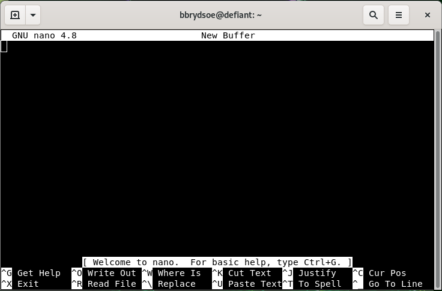
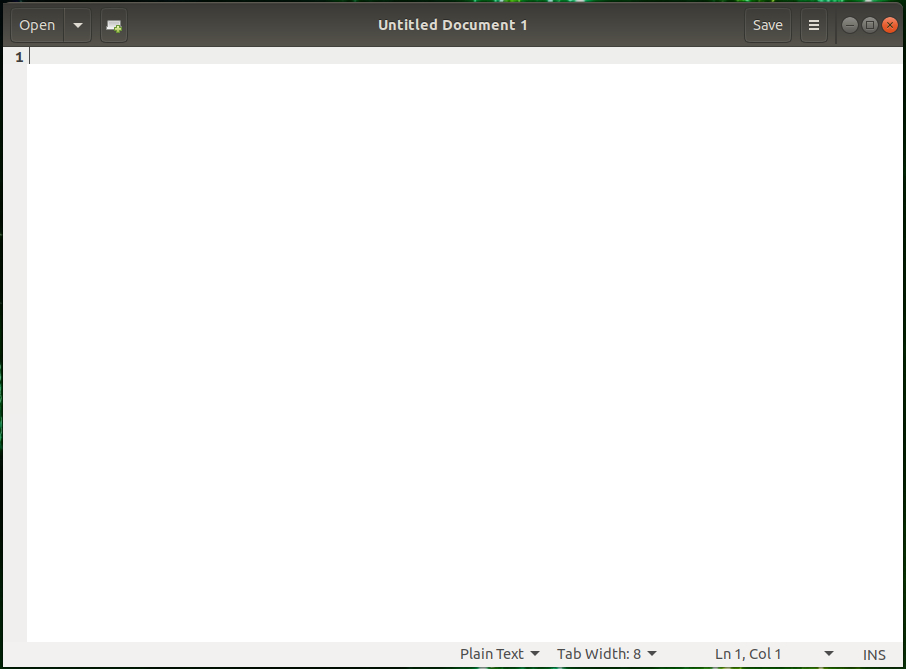

Logging in¶
When you have your account, you can login to Kebnekaise. This can be done with
- any number of SSH clients
- with ThinLinc (easier if you need a graphical interface)
- Desktop Open OnDemand. In this case you get a graphical interface on a compute node (Kebnekaise desktop, Jupyter notebook, RStudio, VSCode, or MATLAB). Here you are already running a batch job session so you can work interactive and run your programs directly.
Objectives
- Login to Kebnekaise, either with ThinLinc or your SSH client of choice.
- We will also look at Desktop Open OnDemand and let you login there. Later in the course you will try out the interactive applications there.
Kebnekaise login servers¶
Note
- The main login node of Kebnekaise:
kebnekaise.hpc2n.umu.se - ThinLinc login node:
kebnekaise-tl.hpc2n.umu.se- ThinLinc through a browser (less features):
https://kebnekaise-tl.hpc2n.umu.se:300/
- ThinLinc through a browser (less features):
- The Desktop Open OnDemand is accessed from https://portal.hpc2n.umu.se/
In addition, there is a login node for the AMD-based nodes. We will talk more about this later: kebnekaise-amd.hpc2n.umu.se. For ThinLinc access: kebnekaise-amd-tl.hpc2n.umu.se
ThinLinc is recommended for this course
ThinLinc: a cross-platform remote desktop server from Cendio AB. Especially useful when you need software with a graphical interface.
This is what we recommend you use for this course, unless you have a preferred SSH client. Most parts of the course can be done from a regular SSH terminal. For the application examples part, you may need a graphical interface but not for most of the other material.
Using ThinLinc¶
- Download the client from https://www.cendio.com/thinlinc/download.
- Install it.
- Windows: Run the downloaded .exe file to install.
- macOS: Information on the ThinLinc macOS info page.
- Linux Ubuntu: Download the .deb file. Run
sudo dpkg -i PATH-TO-FILE/FILE-YOU-DOWNLOADED.deb
- Install it.
- Start the client.
- Enter the name of the server:
kebnekaise-tl.hpc2n.umu.se. Enter your username.

- Go to “Options” \(->\) “Security”. Check that authentication method is set to password.
- Go to “Options” \(->\) “Screen”. Uncheck “Full screen mode”.
- Enter your HPC2N password. Click “Connect”
- Click “Continue” when you are being told that the server’s host key is not in the registry. Wait for the ThinLinc desktop to open.
Open a terminal with ThinLinc¶
You will need a terminal to enter many of the commands in this course. If you have logged in with ThinLinc, you start a terminal with:
- Go to the menu at the top.
- Click “Applications” → “System Tools” → “MATE Terminal”.
- You now have a terminal to work in.
Password¶
You get your first, temporary HPC2N password from this page: HPC2N passwords.
That page can also be used to reset your HPC2N password if you have forgotten it.
Note that you are authenticating through SUPR, using that service’s login credentials!
Warning
The HPC2N password and the SUPR password are separate! The HPC2N password and your university/department password are also separate!
Exercise: Login
Login to Kebnekaise.
- If you are using ThinLinc, first install the ThinLinc client. If you are using another SSH client, install it first if you have not already done so.
Change password¶
Exercise: Change your password after first login
ONLY do this if you have logged in for the first time/is still using the termporary password you got from the HPC2N password reset service!
Changing password is done using the passwd command:
Use a good password that combines letters of different case. Do not use dictionary words. Avoid using the same password that you also use in other places.
It will first ask for your current password. Type in that and press enter. Then type in the new password, enter, and repeat. You have changed the password.
File transfers¶
We are not going to transfer any files as part of this course, but you may have to do so as part of your workflow when using Kebnekaise (or another HPC centre) for your research.
This section will only talk briefly about file transfers. You can find more information and examples on HPC2N’s File transfer documentation.
Linux, OS X¶
scp¶
SCP (Secure CoPy) is a simple way of transferring files between two machines that use the SSH (Secure SHell) protocol. You may use SCP to connect to any system where you have SSH (log-in) access.
These examples show how to use scp from the command-line. Graphical programs exists for doing scp transfer.
The command-lone scp program should already be installed.
Remote to local
Transfer a file from Kebnekaise to your local system, while on your local system
Local to remote
Transfer a local file to Kebnekaise, while on your local system
Recursive directory copy from a local system to a remote system
The directory sourcedirectory is here copied as a subdirectory to somedir
sftp¶
SFTP (SSH File Transfer Protocol or sometimes called Secure File Transfer Protocol) is a network protocol that provides file transfer over a reliable data stream.
SFTP is a command -line program on most Unix, Linux, and Mac OS X systems. It is also available as a protocol choice in some graphical file transfer programs.
Example: From a local system to a remote system
enterprise-d [~]$ sftp user@kebnekaise.hpc2n.umu.se
Connecting to kebnekaise.hpc2n.umu.se...
user@kebnekaise.hpc2n.umu.se's password:
sftp> put file.c C/file.c
Uploading file.c to /home/u/user/C/file.c
file.c 100% 1 0.0KB/s 00:00
sftp> put -P irf.png pic/
Uploading irf.png to /home/u/user/pic/irf.png
irf.png 100% 2100 2.1KB/s 00:00
sftp>
Windows¶
Here you need to download a client: WinSCP, FileZilla (sftp), PSCP/PSFTP, …
You can transfer with sftp or scp.
There is documentation in HPC2N’s documentation pages for Windows file transfers.
Editors¶
Since the editors on a Linux system are different to those you may be familiar with from Windows or macOS, here follows a short overview.
There are command-line editors and graphical editors. If you are connecting with a regular SSH client, it will be simplest to use a command-line editor. If you are using ThinLinc, you can use command-line editors or graphical editors as you want.
Command-line¶
These are all good editors for using on the command line:
They are all installed on Kebnekaise.
Of these, vi/vim as well as emacs are probably the most powerful, though the latter is better in a GUI environment. The easiest editor to use if you are not familiar with any of them is nano.
Nano
- Starting “nano”: Type
nano FILENAMEon the command line and pressEnter.FILENAMEis whatever you want to call your file. - If
FILENAMEis a file that already exists,nanowill open the file. If it dows not exist, it will be created. - You now get an editor that looks like this: 
- First thing to notice is that many of the commands are listed at the bottom.
- The
^before the letter-commands means you should pressCTRLand then the letter (while keepingCTRLdown). - Your prompt is in the editor window itself, and you can just type (or copy and paste) the content you want in your file.
- When you want to exit (and possibly save), you press
CTRLand thenxwhile holdingCTRLdown (this is writtenCTRL-xor^x).nanowill ask you if you want to save the content of the buffer to the file. After that it will exit.
There is a manual for nano here.
GUI¶
If you are connecting with ThinLinc, you will be presented with a graphical user interface (GUI).
From there you can either
- open a terminal window/shell (
Applications->System Tools->MATE Terminal) - or you can choose editors from the menu by going to
Applications->Accessories. This gives several editor options, of which these have a graphical interface:- Text Editor (gedit)
- Pluma - the default editor on the MATE desktop environments (that Thinlinc runs)
- Atom - not just an editor, but an IDE
- Emacs (GUI)
- NEdit “Nirvana Text Editor”
If you are not familiar with any of these, a good recommendation would be to use Text Editor/gedit.
Text Editor/gedit
- Starting “
gedit”:- From the menu, choose
Applications->Accessories->Text Editor.
- From the menu, choose
- You then get a window that looks like this: 
- You can open files by clicking “
Open” in the top menu. - Clicking the small file icon with a green plus will create a new document.
- Save by clicking “
Save” in the menu. - The menu on the top right (the three horizontal lines) gives you several other options, including “
Find” and “Find and Replace”.
HPC2N Open OnDemand desktop¶
HPC2N has recently opened up access to another way to connect to our systems, through an “Open OnDemand desktop” (OOD desktop). If you have used LUNARC’s or C3SE’s systems, you may have tried their Open OnDemand desktop.
Link to HPC2N’s Open OnDemand desktop: https://portal.hpc2n.umu.se/
If you have an account and are member of a project at HPC2N, you can use our OOD desktop.
Open OnDemand is a web service that allows HPC users to schedule jobs, run notebooks and work interactively on a remote cluster from any device that supports a modern browser. The Open OnDemand project was funded by NSF and is currently maintained by the Ohio SuperComputing Centre. Read more about OpenOnDemand at OpenOndemand.org.
HPC2N currently offers these interactive applications:
- Kebnekaise desktop
- Jupyter notebook
- MATLAB
- RStudio
- VS Code
We have some documentation here about our Open OnDemand desktop.
Exercise: Login to HPC2N’s Open OnDemand desktop
- Open a browser and point it to https://portal.hpc2n.umu.se/.
- Click the blue button labeled “Login to HPC2N OnDemand”
- You are sent to the login window. Put your HPC2N username and password, then click “Sign In”
Look around a little. You can try click on the various menu points:
- Files: Links to a file browser that starts in either your home directory or in (one of) your project storage directories
- Jobs: Links to a list of your “Active Jobs” and to a “Job Composer” to create new jobs
- Clusters: the submenu is for shell access (does not currently work)
- Interactive Apps: a list of apps that can be started directly from the dashboard (currently Jupyter, MATLAB, RStudio, VSCode)
- My Interactive Sessions: overview of your current and recent apps sessions
Later today we will try and start a few of the interactive apps.
Keypoints
- You can login with ThinLinc or another SSH client
- ThinLinc is easiest if you need a GUI
- There are several command-line editors: vi/vim, nano, emacs, …
- And several GUI editors, which works best when using ThinLinc: gedit, pluma, atom, emacs (gui), nedit, …
- You can also access Kebnekaise through the Open OnDemand desktop